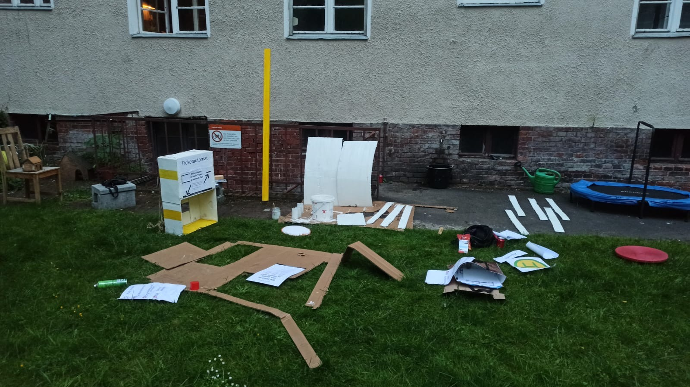

Das Experiment.
Die Auflösung.
Klickt euch durch die einzelnen Schritte, um zu sehen, was wir aus euren Impulsen gemacht haben und wer wir eigentlich sind.
Alles begann mit eurer Perspektive. Um zu verstehen, wie euer Alltag hier aussieht, was euch bewegt und was euch vielleicht noch fehlt, haben wir im Vorfeld viele intensive Interviews mit euch geführt. Ihr habt uns einen ehrlichen Einblick in euer Leben am Standort Sickinger Straße gegeben. Dabei wurde schnell klar: Es braucht einen Ort für Austausch, Wünsche und Sichtbarkeit. Vielen Dank für euren wertvollen Input!

Weil Reden allein nichts verändert, haben wir eure Impulse genommen und eine temporäre Intervention gestartet: Die Bushaltestelle in der Raucherecke wurde zum Leben erweckt! Erst haben wir den Raum aufgemacht, um euren alltäglichen Treffpunkt aufzuwerten und euch mit den Tickets eine Stimme zu geben. Danke, dass ihr so stark mit den Tickets interagiert habt! Zwei Tage später haben wir ihn gezielt zugemacht – eine bewusste Irritation, um zu spüren, was passiert, wenn dieser wichtige soziale Ankerpunkt plötzlich fehlt. Dadurch wurde allen klar, wie wertvoll dieser Raum für euren Austausch eigentlich ist.

[Hier kommt bald euer neuer Input für den Text zu den Beobachtungen und Ergebnissen hin...]

[Hier kommt bald euer neuer Input für den Text über euer Team und euer Studium hin...]